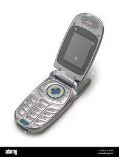
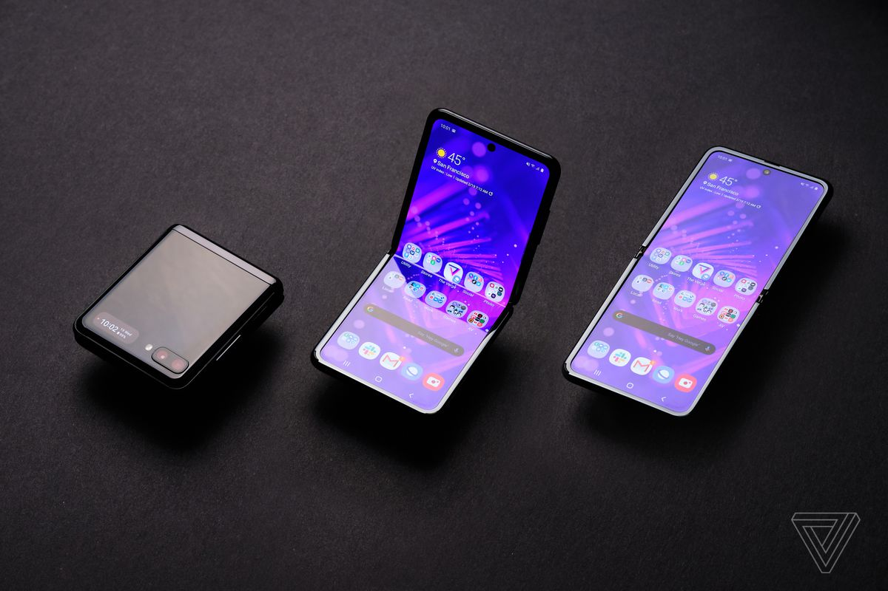

Since cell phones have been changing by the hour many different associations such as Samsung and Apple have been giving their assumptions on how they think cell phones will be like in the future. The IPhone wil triple in in size and the amount of space/ memory in the phone will also triple. Samsung phones will also do the same and the hardware and features will also change. We as customers have seen this with one of these with the new flip cell phone Samsung came out with a few months ago. This shows the progress in which phones have changed from back then.
 